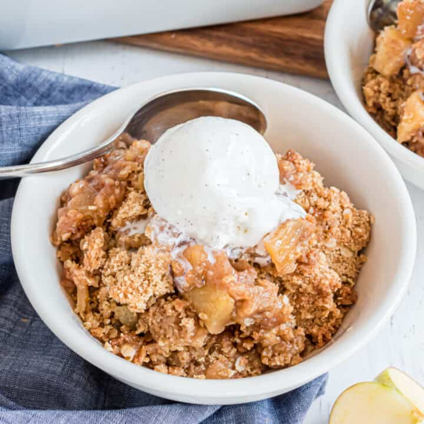

Apple Crumble

Description
Come on, who doesn't like Apple Crumble?
Ingredients
- 7 large Cortland apples - peeled, cored, and sliced
- 1 cup white sugar
- 1 tablespoon ground cinnamon, or more to taste
- 1 cup all-purpose flour
- 1/4 cup brown sugar
- 1/3 cup unsalted butter, cubed
Directions
- Preheat the oven to 350 degrees F (175 degrees C).
- Spread apples in an even layer in a deep dish pie plate or 8-inch square glass casserole dish. Cover with white sugar, then top with cinnamon.
- Combine flour and brown sugar for topping in a bowl. Add butter and cut in with a pastry blender. Spread topping evenly over apple mixture and pat down.
- Bake in the preheated oven until apple mixture is bubbling and topping is browned, about 55 minutes.